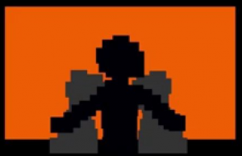
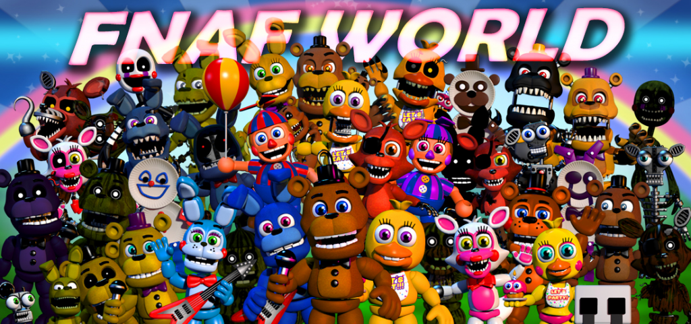

If you see any issues, please do make us aware via our Contact Form.
Thank you for browsing FNaFLore.com, we hope you enjoy the improvements that are coming to the site!

On FNaF World, and its Canonical Relevance
Kizzycocoa – I’ve been slowly fixing up some brand new Faz-Cams, so I’ve not had a chance to work on stuff lately. However, I want to write a bit about FNaF World.
First off, it is clear that FNaF World is not canon off the bat, to the video game series. Not only has Scott said it adds no extra story, but the timeline inconsistencies are abundant. This allegedly has to have happened before Purple Guy’s death, as the scenes where the animatronics were dismantled are the locations of where the hints from the FNaF World minigames end up.
But then, why is Springtrap in the game? Why are the phantoms in the game? Why are the non-canon halloween monsters going to be in 2.0?
It’s clear that this is not a canon addition to the franchise.
But that doesn’t mean it holds no canon at all.
In my opinion, all of the endings represent individual aspects of the world around FNaF.
The basic ending chastises the player for simply playing through a game for completion’s sake, and on the easiest difficulty. This I see as a commentary on the players that simply play, don’t understand and rush to the end to claim bragging rights of a sort.
The hard ending has you battling the game creator, who is refusing to release more. He is frustrated at how the game has consumed his career, and how his future games, if they aren’t FNaF, will have that shadow looming over them and may not be received well due to the change of characters. FNaF World itself is a challenge to this. Scott got into the scary game business initially to try and roll with the punches that Jim Sterling and other notable critics threw at Chipper and Sons. Yet he is now trapped, being expected to churn out more horror games based on the world of FNaF. He does not want to paint himself into this corner, and that is what I believe this ending represents. He feels burnt out by constantly making horror and FNaF games, and would like to move on, even though he feels the massive pressure from the community that he created.
The Chipper and Sons ending echos the sentiment that his past games were laughed at, and found to be creepy. It was intended to be a kid-friendly game. A simple game. Chipper and Sons has some foreboding of a darker world, but the design of the game pushed that level too far, to where the entire game felt eerie. There is a lot of resentment in the Chipper ending towards the player for taking the mostly-innocent game about a beaver’s “coming of age”, and twisting it into something far creepier.
The clock ending is all about FNaF. It’s all about these final pieces. The pieces Scott believes we’ve missed. He is pointing to the FNaF 3 minigames for a very specific reason. Something about those games tie in greatly to FNaF 4, and he wants us to know this. In the files, the box is open. He knows the textures will be dumped, so the FNaF 3’s minigame segments must connect strongly to the elusive box (#FNaFBoxWatch). These two elements are intrinsically tied together, and that is what this game is trying to tell the player. The clocks and the final message have a strong connection that no-one has seemed to dig up.
The lake ending is a reference to Inception, where in the movie, going too deep into dream levels cause you to be trapped within them. I cannot find more meaning beyond that. However, it acts as a good gatekeeper to the more personal ending.

The Happiest Day Ending is, I believe, the most significant of all endings. Freddy wades into the centre of the lake, then he starts falling. From what I can tell, he will stay falling until the keyboard is left alone for a set period. Then, it switches to a man holding his two children together in his arms in front of a flashing screen. This ending is VERY significant.In all games, Scott has done nothing to hide textures. All textures are there. In this ending, all the characters are made up entirely of squares. There is no father or son figures in the dump, this ending is simply a collage of squares. Scott Cawthon cared so much for this ending, he refused to leave any trace of it in the texture dumps that he knew was going to be released. I do not know if he knows the extent to which the community could find this easter egg anyway, but the effort to thwart them shows how important this ending is.
How I see it, is this ending represents the death of Five Nights at Freddy’s, and how it will impact Scott on a personal level. The need to have total inaction of the keyboard seems to match, in my opinion, the time where FNaF is a relic of the past that barely anyone is playing. There are no keyboard taps detailing theories, or “let’s play” videos. The world has moved on, and when it does, you see the three people in that image.
They presumable represent Scott Cawthon himself, and his children. The screen is chaotic in front of them, yet the figures are still, simply watching the screen. This is Scott’s vision of the future, or maybe even the present. The series is over, the hype has died off and he can share the FNaF legacy with his children. FNaF World is the very last FNaF game, and Scott has been abundantly clear about it. This scene is Scott and his children, simply looking back on what FNaF did to the world, now that they have the peace and quiet to reflect on the game, and it’s imprint on the game design industry.
Or perhaps it is representing the present, in which they are looking upon the game, and reflecting on it’s impact today.
I might be reading too far into it, but I feel this kind of sentiment is more or less the note Scott wanted to leave. I believe the intended message has to be one of those two options. No matter which you choose, I feel this is a message on how the games have affected the Cawthon family, and how they can look at this legacy, this firestorm of content and attention drawn to them. It is completely chaotic and there is so much that has happened that the screen flashes wildly with the activity. The flashing represents the sheer amount of chaos, debate and attention the game has received. But overall, as chaotic as it is, I feel the sentiment is that the figures are reflecting on this time of their lives. There is hidden text calling this the “happiest day”. It is a message not to be applied to any dead children, but to the Cawthon family itself. The massive effort Scott put in to obscure this ending speaks volumes as to it’s relevance.
Finally, the Fredbear torso ending is just pure lol-memes.
With all the endings noted and analysed, look at the theme of the entire game. It is not about FNaF and it’s lore, but about the world around FNaF. It has a massive amount of meaning embedded into it. The game itself is made in an RPG format, similar to all previous works of Scott before FNaF. This game outlines what is happening around FNaF, not within it.
Though the endings are clearly hammed up (particularly Chipper and Scott’s ending), this game is certainly canon. Not canon to the FNaF franchise, but to the feelings and sentiments around the game itself and the attention it has whipped up. It is an amplification of Scott’s view of his own creation, in a RPG medium which borrows enemies and characters from his previous games. It throws all of his work into one game, and reflects on it and how far FNaF has taken him.
 FNaF World is certainly the weakest entry in the FNaF franchise, especially on a gameplay level. Sadly, Scott does not have a good grasp on the RPG format when mixing it into the FNaF franchise, which does show through. It’s still fun, but for an RPG, it is not worth it.
FNaF World is certainly the weakest entry in the FNaF franchise, especially on a gameplay level. Sadly, Scott does not have a good grasp on the RPG format when mixing it into the FNaF franchise, which does show through. It’s still fun, but for an RPG, it is not worth it.
This game is not for RPG enthusiasts at all. This game is for those who like the franchise. This is for the people who have stuck by him. In essence, this game exists to look back on how far FNaF has taken him from his original art directions, and his original creative works. Though he clearly did enjoy creating this franchise and respects the community greatly, this game is a message that FNaF is over. It is saying that FNaF is done, and he wants to pursue other game formats and universes, but he will still hold FNaF to heart as the success that it was, and the fanbase he created. For a game developer, that feeling when you see such a huge fanbase care about your work is almost magical.
At least, in small doses.
While being very dodgy in gameplay terms alone, this game is a good testament to the Five Nights at Freddy’s legacy, directed purely at fans of the franchise. I personally look forward to playing future games that Scott creates.
On that note, I do hope there are more Steampunk Elephants in future games. As someone who’d be stoned to death by most religions (including Christianity), I don’t care much for the religious theme that The Pilgrim’s Progress had. But Steampunk Elephants are amazing and I would like at least three to appear in Scott’s next game. Please deliver, Scott!
